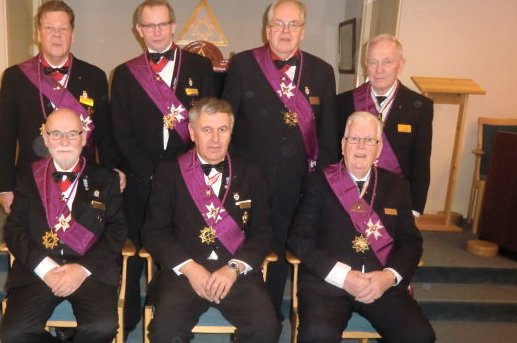

Mästerrådet

Stående Fv.Staffan Samuelsson(CM) Carl Ferling(S) ) Ingemar Carlsson(SKM) Ingvar Jansson(KN)
Sittande Fv.Reiner Widäng(VM) Rolf Lindström(M) Sören Svensson(UM).
Mästarerådssammanträden 2016. Onsdagar Kl.18.30.
7/1.(obs Torsdag). 3/2. 3/3. 30/3. 27/4. 24/8.28/9. 26/10.( 24/11 obs torsdag.)